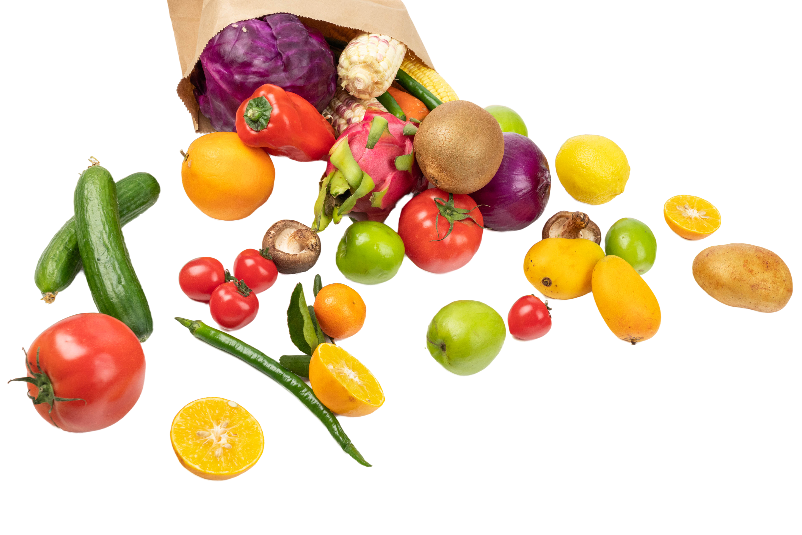

Всё о продуктах

Хорошее блюдо начинается с хороших продуктов.
Узнайте, как выбрать, хранить и использовать
основные ингредиенты.
Овощи и фрукты
Основа здорового питания. Содержат витамины, минералы и клетчатку.
Выбирайте сезонные продукты — они вкуснее и полезнее.
- Помидоры — источник ликопина, хранить при комнатной температуре
- Морковь — богата бета-каротином, хранить в прохладном месте
- Яблоки — клетчатка и витамин C, хранить в холодильнике
- Шпинат — железо и фолиевая кислота, хранить в бумажном полотенце
К рецептам
Мясо и рыба
Источники белка и незаменимых аминокислот. Обращайте внимание
на свежесть и срок годности.
- Курица — диетическое мясо, хранить в холодильнике не более 2 суток
- Говядина — источник железа, лучше покупать охлаждённой
- Лосось — омега-3 жирные кислоты, хранить на льду
- Треска — нежирная рыба, подходит для диетического питания
К рецептам
Крупы и макароны
Долго хранятся и дают энергию. Основа многих блюд.
- Рис — хранить в сухом месте, срок до 12 месяцев
- Гречка — богата железом, варить 15–20 минут
- Спагетти — из твёрдых сортов пшеницы, аль денте за 8–10 минут
- Овсянка — идеальна для завтрака
К рецептам
Сроки хранения продуктов
Как долго можно хранить продукты
| Продукт |
Где хранить |
Срок |
Температура |
| Молоко |
Холодильник |
3–5 дней |
+2…+4 °C |
| Курица (сырая) |
Холодильник |
1–2 дня |
0…+2 °C |
| Яйца |
Холодильник |
3–5 недель |
+2…+5 °C |
| Картофель |
Тёмное место |
2–3 месяца |
+4…+8 °C |
| Крупы |
Шкаф |
6–12 месяцев |
+15…+20 °C |
Полезный совет
Не храните вместе фрукты и овощи:
фрукты выделяют этилен, из-за которого овощи быстрее портятся.
Перейти к рецептам